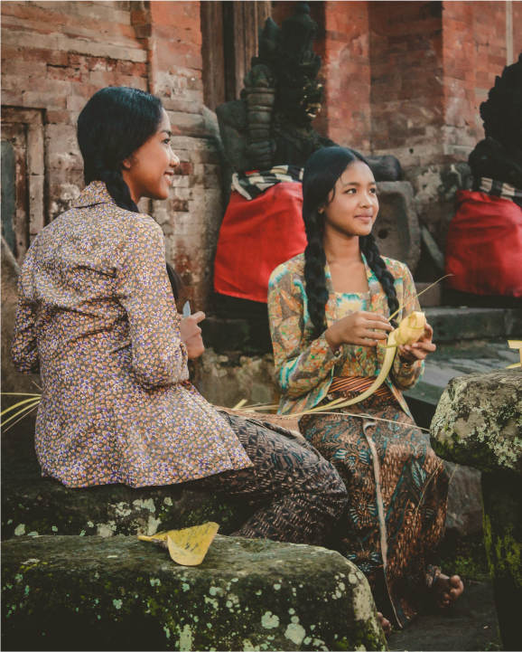

<section class="main-1">
    <aside class="container-1">


        <aside data-aos="zoom-out-left"
        data-aos-easing="linear"
        data-aos-delay="400"
        data-aos-offset=""  class="culture-content">
<h5  class="h5">INDONESIA CULTURE</h5>
<h1 class="h1">Our culture here <br> very friendly <br> to people</h1>
<h6 class="h6">known for his politeness, manners and gentleness. This becomes a <br> characteristic when they mingle with other tribes <br> and become basic traits that are passed down by their ancestors.</h6>
<a class="culture-text-1" href="">read more <span class="material-icons-round A-arrow">
    east
    </span></a>
</aside>


        <aside data-aos="zoom-out-right"
        data-aos-easing="linear"
        data-aos-delay="400"
        data-aos-offset="" class="img-1">
            
        </aside>


    </aside>
</section>